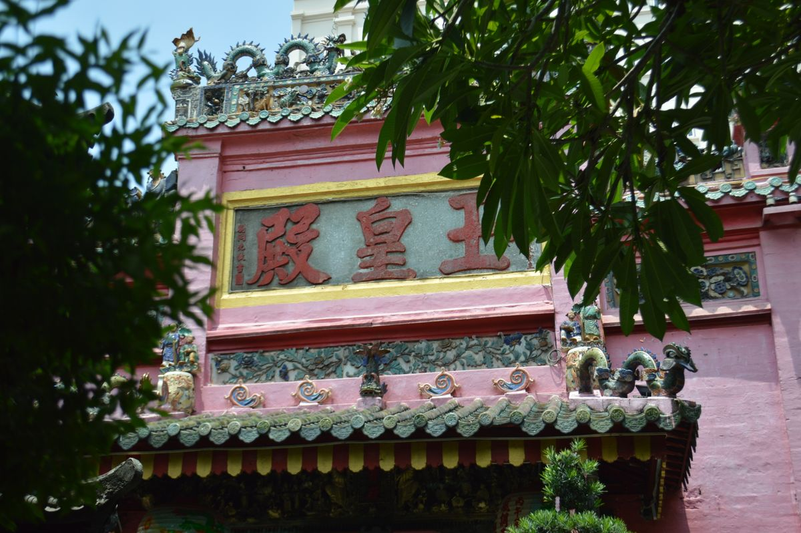
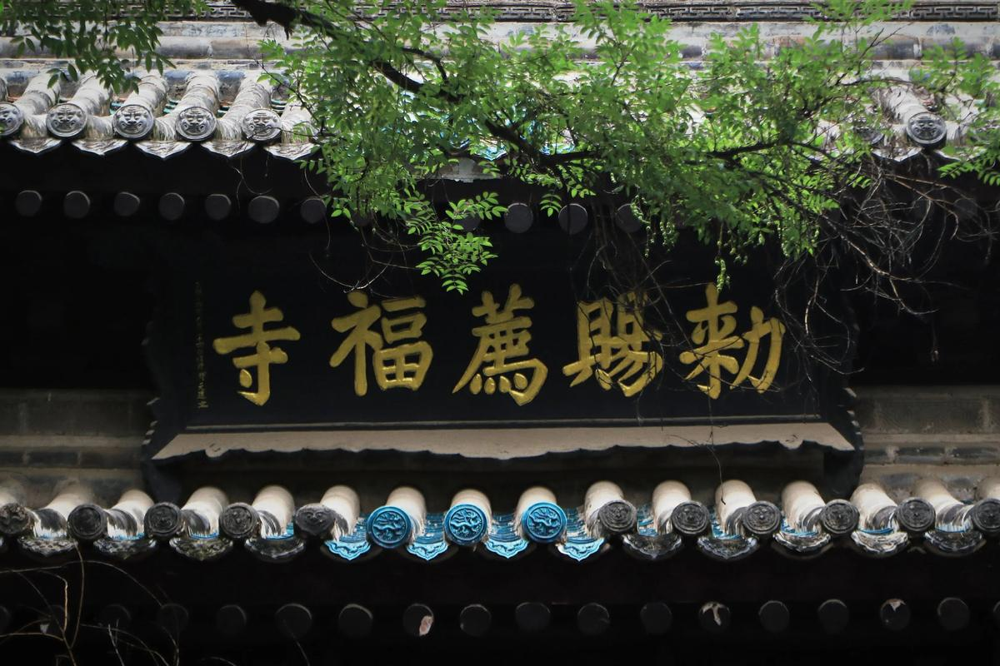
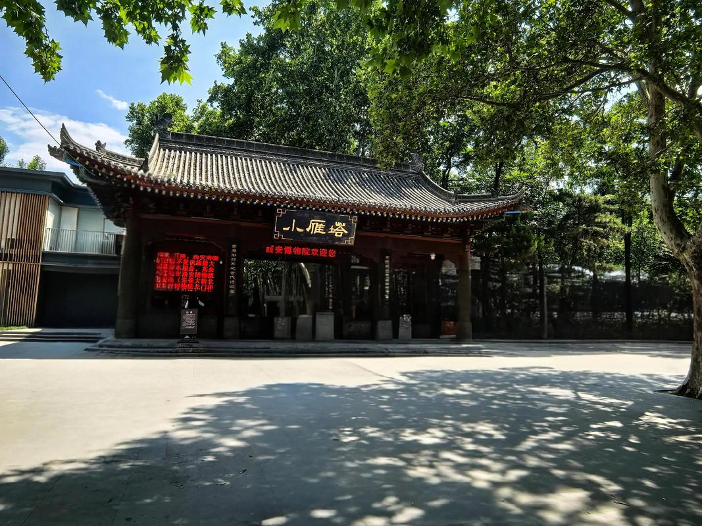
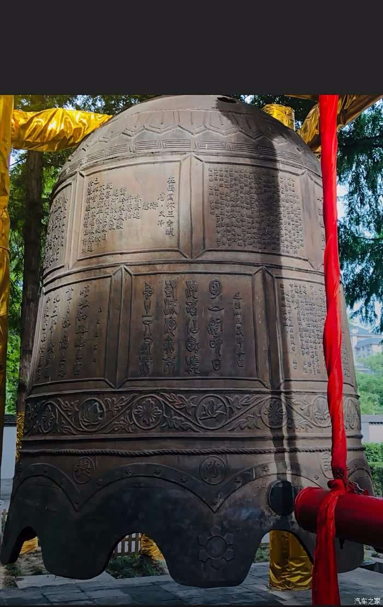
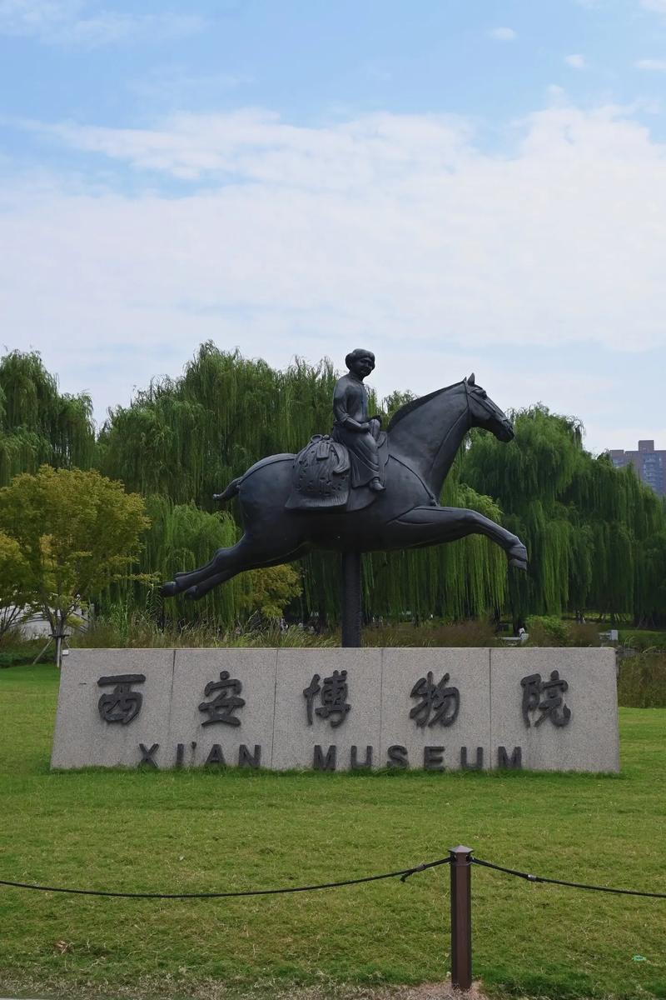
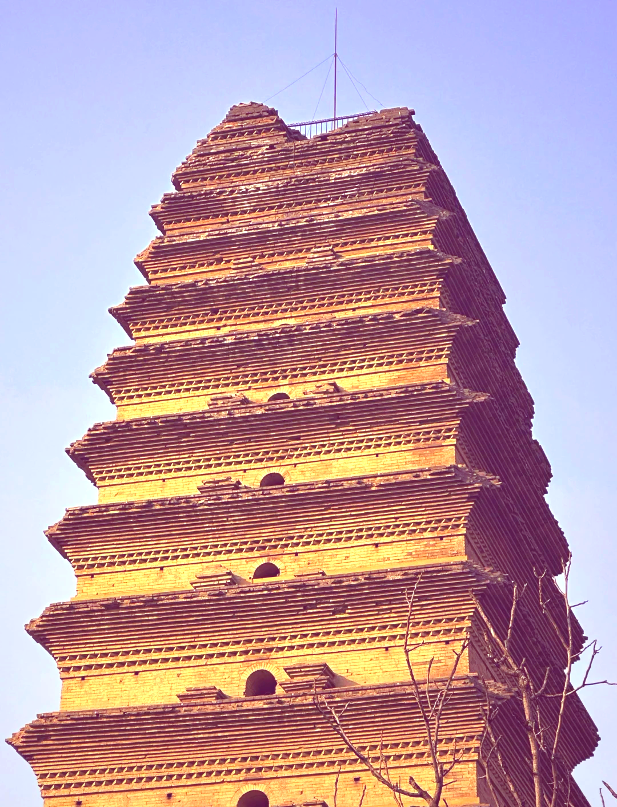

小雁塔位于西安市南门外友谊西路荐福寺内。荐福寺原为唐中宗李显的旧宅，唐高宗李治驾崩后，武则天为超度高宗亡灵，于文明元年（684年）将其改建为寺院，初名"大献福寺"，后改名"荐福寺"。唐景龙年间（707—710年），唐中宗为存放高僧义净从印度带回的佛经和佛像，敕令在荐福寺内建塔，即今天的小雁塔。
与大雁塔为玄奘所建不同，小雁塔与另一位伟大的唐代求法高僧——义净法师密切相关。义净于咸亨二年（671年）从广州取海路赴印度，在南海和印度游历二十余年，回国后主持翻译佛经56部230卷。他在荐福寺译经期间推动了小雁塔的建造，使其成为唐代中外文化交流的又一重要见证。

"大雁塔"与"小雁塔"是民间约定俗成的称呼，因两塔规模大小不同而得名。大雁塔体量宏大，为七层楼阁式方塔；小雁塔则较为秀丽，为十五层密檐式砖塔。"大""小"二字通俗亲切，体现了西安百姓对这两座古塔的深厚感情。两塔同为唐代长安城的重要佛教建筑遗存，2014年双双被列入联合国教科文组织世界文化遗产名录（"丝绸之路：长安—天山廊道路网"）。
小雁塔的建筑形制为大雁塔之外的另一典范——密檐式砖塔。原塔为十五层，通高约45米，现存十三层，高约43米。塔身平面呈正方形，底层边长约11米，自下而上逐层收分递减，轮廓呈柔和的抛物线形，玲珑秀美。塔身无柱、无枋、无斗拱，以简洁的叠涩出檐形成密檐效果，风格清雅脱俗。
小雁塔最为人称道的奇迹是"三裂三合"：明成化二十三年（1487年），陕西发生了6.25级大地震，小雁塔自塔顶至塔基震裂一条大缝。然而在正德十六年（1521年）的又一次地震中，裂缝竟奇迹般地合拢了。此后，嘉靖三十四年（1556年）关中特大地震和清康熙年间地震中，塔身又先后经历开裂与合拢。这"三裂三合"的传奇，使小雁塔被视为中国古代建筑抗震技术的奇迹。
现代科学研究认为，小雁塔的"裂而复合"得益于其精妙的地基设计：塔基呈半球形夯土台，如同一个巨大的"不倒翁"，地震时塔身可在一定范围内摆动而不倾倒，震动结束后在重力作用下恢复原位。这一设计体现了唐代工匠对力学原理的深刻理解。
"雁塔晨钟"为关中八景之一。每日清晨，荐福寺钟声悠远，与古塔朝霞交相辉映，千百年来一直是西安最富诗意的风景。
小雁塔的"雁塔晨钟"名列"关中八景"之一。荐福寺内有一口金代明昌三年（1192年）铸造的大钟，重达八千余斤，钟声浑厚悠扬，清晨敲响时可声闻数里。钟声、塔影、朝霞与寺院中袅袅香烟，共同构成了古城长安最富禅意的一幕。
如今，西安博物院建在荐福寺旁，与小雁塔景区融为一体。博物院馆藏丰富，包括大量周秦汉唐文物，与小雁塔共同构成了一个集古建筑、博物馆、园林于一体的文化景区。游客可以在参观小雁塔的同时，欣赏博物院中的珍贵文物，深入了解西安十三朝古都的辉煌历史。




| 地址 | 西安市碑林区友谊西路72号（荐福寺内） |
|---|---|
| 开放时间 | 09:00 — 17:30（周二闭馆） |
| 门票 | 免费（凭身份证领票入内）；登塔需另购票 |
| 交通 | 地铁 2 号线南稍门站 A 口出，步行约5分钟 |
| 小贴士 | 小雁塔相比大雁塔游人较少，更为清幽静谧，适合静心游览；可连同西安博物院一起参观（同一入口）；推荐清晨前往体验"雁塔晨钟"意境 |